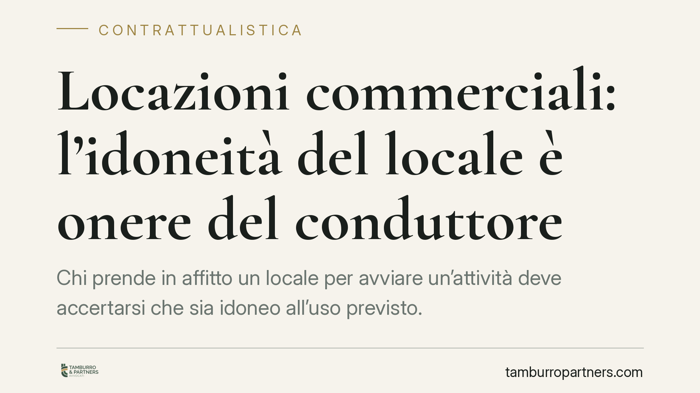

Locazioni commerciali: l'idoneità del locale è onere del conduttore
Chi prende in affitto un locale per avviare un'attività deve accertarsi che sia idoneo all'uso previsto. La giurisprudenza di merito ribadisce che l'onere di verifica grava sul conduttore, salvo patti contrari espressi. Il punto critico è la distinzione tra vizi materiali del bene e mancanza dei titoli amministrativi necessari all'esercizio.

Il fatto
Una recente pronuncia della Corte d'Appello di Perugia è tornata su un tema ricorrente nel contenzioso locatizio commerciale: chi risponde se il locale, pur consegnato in buono stato, non consente di svolgere l'attività per cui è stato affittato?
La risposta, confermata in linea con l'orientamento consolidato di legittimità, è netta. Salvo diversa pattuizione, spetta al conduttore verificare a monte che l'immobile sia idoneo — sotto il profilo tecnico e amministrativo — all'uso concreto che intende farne.
Inquadramento normativo
Il punto di partenza è l'art. 1575 c.c., che impone al locatore di consegnare la cosa in buono stato e di mantenerla in condizioni da servire all'uso convenuto. A questo si lega l'art. 1578 c.c., sui vizi della cosa locata: se al momento della consegna il bene presenta vizi che ne diminuiscono in modo apprezzabile l'idoneità all'uso pattuito, il conduttore può chiedere la risoluzione o la riduzione del canone.
Qui emerge la distinzione decisiva, spesso trascurata nei contratti.
Un conto è l'inidoneità oggettiva, cioè il vizio materiale che incide sulla struttura o sulla fruibilità fisica del bene (infiltrazioni, impianti non funzionanti, carenze costruttive): questa rientra nella responsabilità del locatore ai sensi dell'art. 1578 c.c.
Altro è l'inidoneità giuridico-amministrativa, cioè la mancanza dei titoli che consentono di destinare quel locale a una specifica attività: compatibilità urbanistica, destinazione d'uso, agibilità. L'agibilità è disciplinata dall'art. 24 del DPR 380/2001 (Testo Unico dell'Edilizia), che la àncora alla sussistenza delle condizioni di sicurezza, igiene, salubrità e risparmio energetico dell'immobile.
Su questo secondo versante, l'orientamento consolidato della Cassazione colloca l'onere di verifica in capo al conduttore. Chi apre un'attività conosce — o deve conoscere — i requisiti amministrativi del proprio settore e deve accertarsi che il locale li soddisfi, prima di firmare.
Implicazioni pratiche
La conseguenza è concreta e spesso onerosa. Il conduttore che scopre, dopo la firma, che il locale non è compatibile con la destinazione d'uso richiesta dal Comune, o che manca l'agibilità necessaria al rilascio delle autorizzazioni, non può automaticamente rivolgersi al locatore per la risoluzione del contratto o la sospensione del canone.
La regolarità urbanistica e l'agibilità non sono dettagli formali: condizionano la legittimità stessa dell'attività. Un'autorizzazione commerciale negata dal Comune per irregolarità dei locali può bloccare l'avvio dell'impresa, con il canone che continua comunque a maturare.
Il locatore risponde solo quando il contratto contiene clausole espresse che gli addossano la garanzia dell'idoneità amministrativa, oppure quando ha dichiarato il contrario di quanto risulta dagli atti. In assenza di tali pattuizioni, il rischio resta sul conduttore.
È opportuno non sottovalutare questa fase: la verifica preventiva costa molto meno di un contenzioso a contratto già in corso.
Cosa fare in concreto
- Verifica la destinazione d'uso urbanistica del locale presso l'ufficio tecnico comunale prima della firma, confrontandola con l'attività che intendi svolgere.
- Richiedi al locatore il certificato di agibilità (art. 24 DPR 380/2001) e la documentazione catastale aggiornata; conserva ogni riscontro scritto.
- Inserisci clausole espresse che ripartiscano chiaramente l'onere dell'idoneità amministrativa: se vuoi che sia il locatore a garantirla, deve risultare per iscritto.
- Subordina la decorrenza del canone al rilascio dei titoli abilitativi necessari all'attività: una condizione sospensiva su questo punto protegge il conduttore dal pagare per un locale che non può ancora utilizzare.
- Distingui nel contratto vizi materiali e requisiti amministrativi, indicando le conseguenze di eventuali difformità emerse dopo la consegna.
La redazione del contratto è il momento in cui questi rischi si governano. Una verifica documentale accurata e clausole precise sulla ripartizione degli oneri evitano la gran parte delle controversie che nascono, invece, da accordi lacunosi firmati sulla fiducia.
---
Contributo informativo a cura di Tamburro & Partners - Avv. Giuseppe Tamburro. Non costituisce parere legale.
Ogni contratto ha il suo equilibrio.
Se vuoi una revisione delle clausole o una redazione su misura, scrivi allo studio. Ti rispondiamo entro un giorno lavorativo.